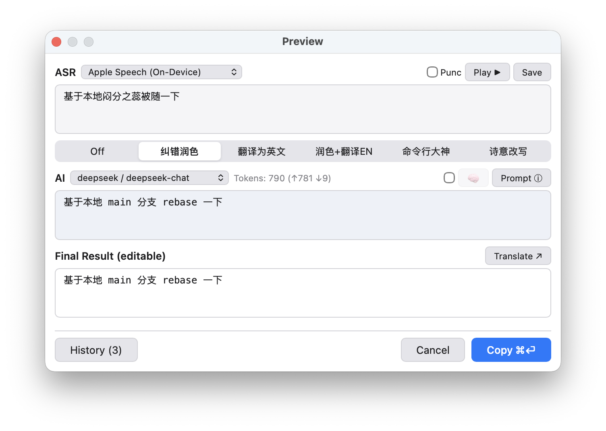

语音转文字，即时输入
macOS 菜单栏应用 — 按住快捷键录音，松开即转写并自动输入。 内置键盘驱动启动器，搜索应用、文件和剪贴板。 离线优先、多引擎、AI 增强、隐私至上。
Lite 版 — 更小体积，Apple Speech + 远程 ASR，无需下载大型本地模型
最新版本macOS 菜单栏应用 — 按住快捷键录音，松开即转写并自动输入。 内置键盘驱动启动器，搜索应用、文件和剪贴板。 离线优先、多引擎、AI 增强、隐私至上。
Lite 版 — 更小体积，Apple Speech + 远程 ASR，无需下载大型本地模型
最新版本macOS 上最全面的语音输入工具
零遥测、零分析、零数据收集。搭配自部署 LLM（如 Ollama），所有数据 — 语音、文本、词库 — 完全留在本机，绝不外流。
五大引擎 — Apple Speech（零配置）、FunASR（中文优化）、MLX-Whisper（99 种语言，Apple GPU 加速）、Sherpa-ONNX 及 Whisper API。录音时实时流式转写浮层。
LLM 驱动的纠错、翻译和链式管道，支持任何 OpenAI 兼容 API。剪贴板增强（Ctrl+Cmd+V）可直接处理选中文本。支持扩展思维可视化。
个人词库从纠正历史中学习专业术语，会话历史实现话题连续性。越用越准确。
Alfred 风格搜索面板 — 应用、文件、剪贴板历史、书签、计算器（含单位换算）及命令面板。代码片段输入时自动展开。
Python 插件系统，支持 Leader 键、快捷键、事件监听、持久化存储和 Shell 命令，实现 macOS 自动化。
三步操作，无需切换窗口
按住 fn 开始说话，实时浮层同步显示识别结果。Cmd 重新开始，Space 取消，Z 浏览最近历史。
松开按键 — WenZi 转写语音，可选 AI 增强处理。
结果自动输入到当前应用，或在预览面板中编辑、切换模式（⌘1–⌘9）、对比后确认。
预览面板 — 查看、编辑、切换模式、对比模型，确认后再输出

根据语言和硬件选择最佳引擎
| 引擎 | 语言 | 速度 | 准确度 | 流式转录 | 下载大小 |
|---|---|---|---|---|---|
| Apple Speech ⚠ | 多语言 | 快 | 良好 | 支持 | 无需下载（系统内置） |
| FunASR 默认 | 中文 | 快 | 高 | 不支持 | ~945 MB |
| MLX-Whisper | 99 种语言 | 中等 | 高 | 不支持 | 75 MB – 1.6 GB |
| Sherpa-ONNX | 多语言 | 快 | 高 | 支持 | 因模型而异 |
| Whisper API | 多语言 | 取决于网络 | 高 | 不支持 | 无需下载（云端） |
深入了解 WenZi 的每个功能